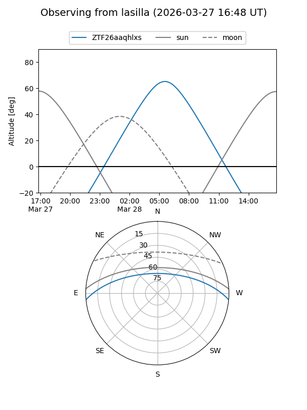
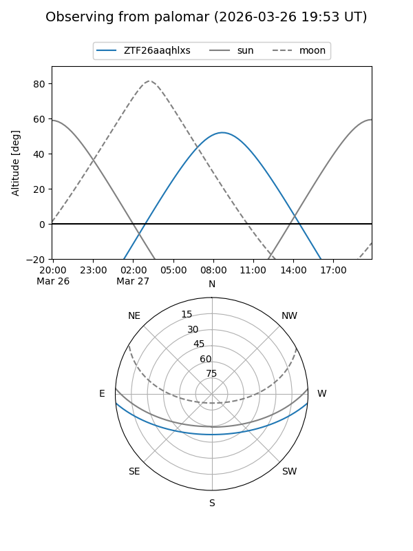

ZTF26aaqhlxs
Target ZTF26aaqhlxs at 2026-03-27 10:23
Aliases and brokers:
FINK: link
Lasair: link
ALeRCE: link
alt names
ZTF26aaqhlxs (ztf,fink_ztf)
Coordinates:
equatorial (ra, dec) = 197.9382,-4.40540
equatorial (HMS+DMS) = 13:11:45.16,-04:24:19.45
galactic (l, b) = (312.5432,+58.08674)
Flags:
Photometry:
last ztfg=17.17
1 ztfg detections
Lightcurve
Visibility


Additional plots